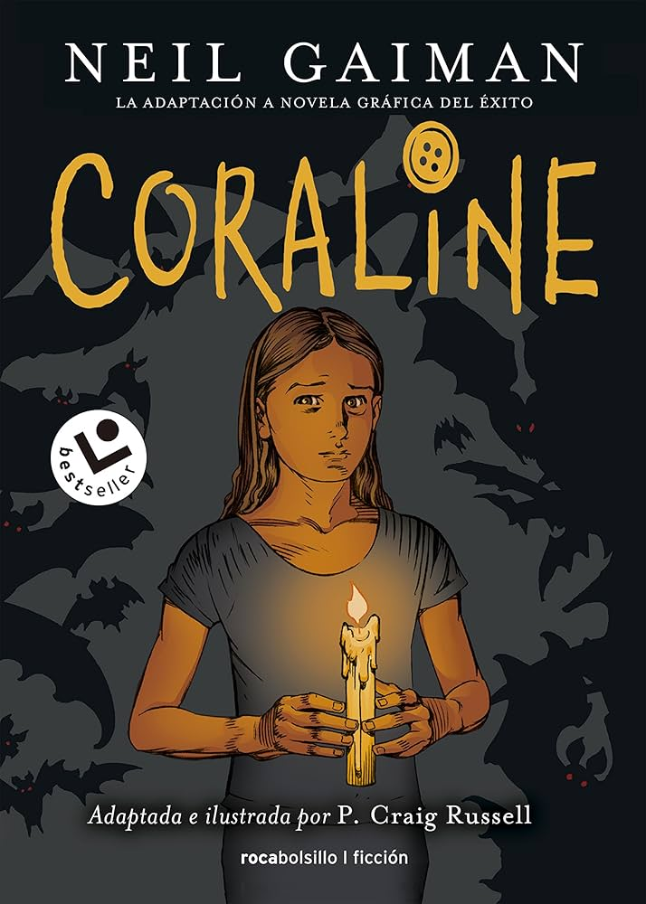
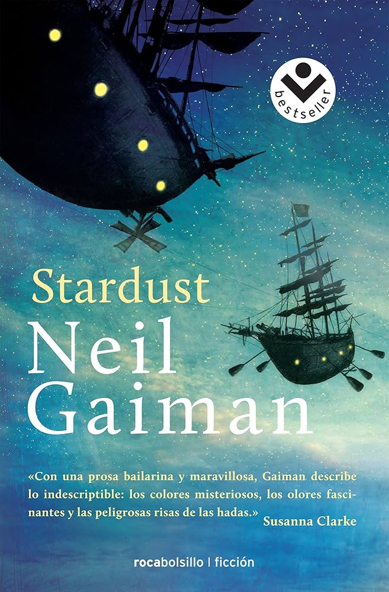

Neil Gaiman
Neil Richard Gaiman (Portchester, Inglaterra, 10 de noviembre de 1960) es un autor de ficción, novelas, cómics, novelas gráficas, no ficción, teatro de audio, películas e historietas y escritor británico. Cultiva el género fantástico. Sus obras incluyen la serie de cómics The Sandman y las novelas Stardust, Coraline y El libro del cementerio. Ha ganado numerosos premios, incluyendo los premios Hugo, Nebula y Bram Stoker, así como las medallas Newbery y Carnegie. En 2013, El Océano al Final del Camino, fue votado Mejor Audiolibro del Año en el National Book Award.
OTROS LIBROS DE NEIL GAIMAN

Coraline

American gods

El libro del cementerio

El oceano al final del camino

Stardust